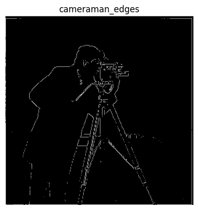
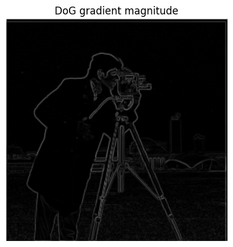
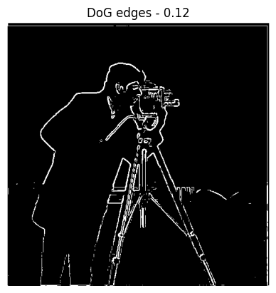
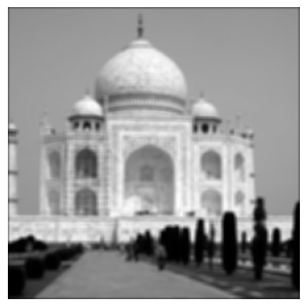
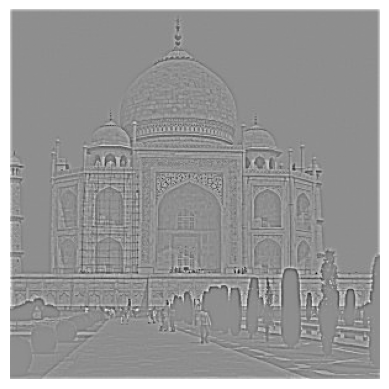
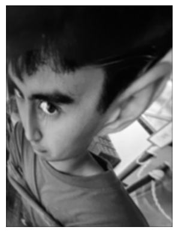
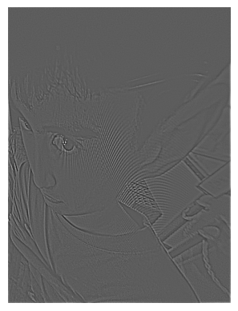
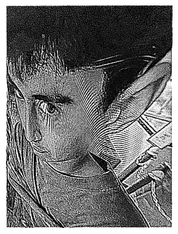

Go Back
Project 2: Fun with Filters and Frequencies!
Part 1 – Fun with Filters
Part 1.1 – Convolutions from Scratch!
A convolution is a mathematical operation that describes how a small matrix slides across
an input and modifies it. In the case of this project, our input matrix is an image, and
our smaller matrix is a kernel or filter.
In this part of the prject, I implemented 2D convolutions from using both four-loop and
two-loop approaches, and compared the results to
scipy.signal.convolve2d to
validate they were correct.
The code snippets can be seen below:
Four Loop
def fourloop_convolution(image, filter):
h, w = image.shape
kh, kw = filter.shape
ph, pw = kh // 2, kw // 2
filter = np.flip(filter)
output = np.zeros_like(image)
padded = np.pad(image, ((ph, ph), (pw, pw)))
for i in range(h):
for j in range(w):
value = 0.0
for m in range(kh):
for n in range(kw):
value += padded[i+m, j+n] * filter[m, n]
output[i, j] = value
return output
Two Loop
def twoloop_convolution(image, filter):
h, w = image.shape
kh, kw = filter.shape
ph, pw = kh // 2, kw // 2
filter = np.flip(filter)
output = np.zeros_like(image)
padded = np.pad(image, ((ph, ph), (pw, pw)))
for i in range(h):
for j in range(w):
area = padded[i:i+kh, j:j+kw]
output[i, j] = np.sum(area * filter)
return output
I then applied a 9x9 box filter and ran the convolutions to show equivalence.
Next, I convolved the image using the finite difference operators
Dx = [1, 0, -1] (horizontal finite difference) and
Dy = [1; 0; -1]
T (vertical finite difference) and
calculated the max difference between the output of my implementations compared to
scipy using
np.abs(scratch_implementation - scipy).max(), which equaled
zero for all implementations.
Runtime: For runtime, the four loop implementation took longer to run
compared to the two loop implementation.
Boundaries: To handle boundaries, I used zero padding using np.pad(...)
Part 1.2 – Finite Difference Operator
In this section I showed the partial derivatives of the cameraman image
(using
scipy.signal.convolve2d) by convolving the image with
the finite difference operators D
x and D
y from before.
I also computed and displayed the gradient magnitude image, then converted it
into an edge image by binarizing the gradient magnitude. Through trial and error,
I experimented with different thresholds, trying to balance noise suppression
while still showing the edges.

Binarized edge image (threshold: 0.37)
Part 1.3 – Derivative of Gaussian (DoG) Filter
Here, I creatd a blurred version of the cameraman image by convolving it
with a 2D gaussian filter. I created the filter by using
cv2.getGaussianKernel() to create a 1D gaussian, then taking an
I then convolved the gaussian with D
x and D
y.

DoG Gradient Magnitude

DoG Edges (threshold: 0.12)
Part 2 – Fun with Frequencies
Part 2.1 – Image "Sharpening"
In this part, I derived the unsharp masking technique by using convolving with both a low-pass
filter (gaussian in this case) to get the low frequencies, then subtracting the low frequencies
from the original image to get the high frequencies of the image.
Taj Mahal

Low Frequencies

High Frequencies

Sharpened
My friend "rohn"

Low Frequencies

High Frequencies

Sharpened
I then added additional high frequencies to make the image look "sharper" and experimented with
sharpening, blurring, and resharpening an image. For this approach, the resharpened image appeared
very grainy compared to the original.
Adding more high frequencies
Sharpening, Blurring, and Re-sharpening
Sharpened Image

Re-sharpened Image
Part 2.2 – Hybrid Images
Using the hybrid images approach explained in the SIGGRAPH 2006 paper (
here),
I made static images that visually change based on the distance of the viewer. When viewed upclose, the
higher frequency portion is visible and the lower frequencies are less visible as they are in your periphery.
When viewing the image from further away, the low frequency portion of image is more visible.
I did this by completing the following steps:
1. Align the images
2. Apply a low-pass filter (gaussian) to one of the images
3. Apply high-pass filter to the other image
4. Overlay and Combine the two images
Part 2.3 – Gaussian and Laplacian Stacks
Gaussian and Laplacian stacks are similar to pyramids (from Project 1), however they do not downsample meaning
the processed images are the same size as the original image, rather than getting smaller like in a pyramid.
I implemented the
gaussian stack by simply appling the Gaussian filter at each level. I computed the
laplacian stack by calculating the difference of the gaussian stack at each level.
Part 2.4 – Multiresolution Blending (a.k.a. the oraple!)
For the final part of this project, I used the gaussian and laplacian stacks to
blend images together. My implementation was the following:
1. Read the image
2. Create a mask for the image
3. Create the stacks: a laplacian stack for each image and a gaussian stack for the mask
4. Mask and blend the images!
Oraple
Heart
Teletubby Rock